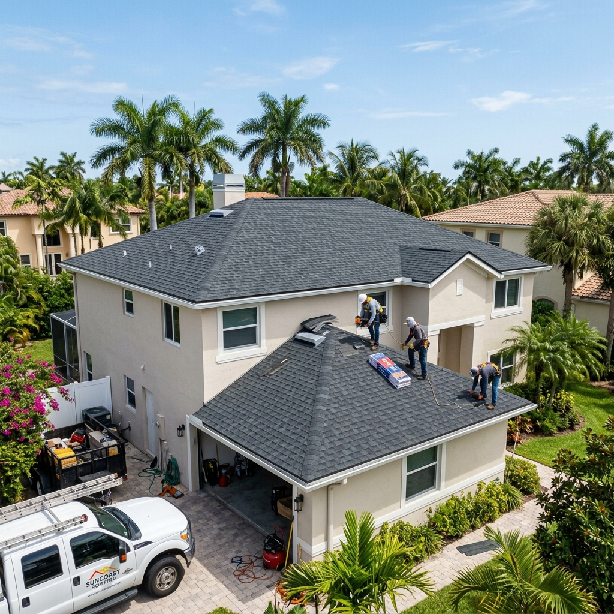

Identifying exactly when to replace damaged shingles is critical to preventing costly interior water damage, especially with the intense weather of South Florida. When shingles begin to lift, curl, or lose their protective granule coating, your home is vulnerable to leaks. Professional roofing inspections can determine whether a quick repair will suffice or if your residential property requires a complete shingle replacement to remain secure during hurricane season.

The Danger of Leaving Damaged Shingles Unaddressed in South Florida
Leaving compromised shingles on your roof is risky. South Florida sun, UV exposure, and heavy rain quickly turn a minor crack into a ceiling leak. Once water bypasses shingles, it rots the wood deck, breeds mold, and weakens structural integrity. High winds can easily peel loose shingles, exposing your home's interior to sudden rain.
How to SAFELY Identify Shingle Damage from the Ground
Homeowners can spot warning signs from the safety of the ground. Using binoculars, inspect your roof for curled, cracked, or completely missing shingles. Also check gutters for black granules, which show the asphalt coating is wearing off. Inside, look for water rings or bubbling paint on ceilings, which indicate a breach.
Essential Tools and Steps for Replacing a Single Shingle
Replacing a shingle requires a roofing hammer, flat pry bar, utility knife, and galvanized nails. First, slide the pry bar under the damaged shingle and the row above to break the seal. Remove the nails holding the broken piece, slide it out, and insert a new shingle. Secure it with hot-dipped nails and seal with roofing cement.
Why Lifting the Overlapping Rows Requires Extreme Caution
Lifting the overlapping row is a delicate step. On hot days, asphalt shingles get sticky and tear easily. On cold mornings, they become brittle and crack. A skilled roofing professional knows how to apply light pressure to release the seal without harming surrounding shingles, preserving the roof's waterproofing layout.
The Proper Nailing and Sealing Techniques for High Winds
Proper nails and sealing help shingles survive Florida storms. Fasten each shingle with hot-dipped galvanized nails placed just below the sealant strip. Nails driven too high or deep will reduce wind resistance. Apply small dabs of roofing cement under tabs to secure the bond until heat activates the self-sealing strip.
The South Florida and Fort Lauderdale Shingle Roofing Code Requirements
Fort Lauderdale residential properties fall within the High Velocity Hurricane Zone (HVHZ) under the Florida Building Code, which imposes the strictest wind-resistance standards in the nation. Any shingle replacement or repair must utilize materials certified to withstand winds of up to 150 miles per hour or more. Local Broward County building regulations also dictate that if more than 25 percent of a roof is damaged within a 12-month period, the entire roof must be replaced to meet modern building safety codes. Planet Roofing handles all necessary permits, ensuring your shingle installation is fully compliant with state and local laws.
What to Do Next to Protect Your Shingle Roof
Taking action quickly when you notice roof damage can save you thousands of dollars in secondary repairs. Here are the practical steps you should follow:
- Document the Damage: Take clear, high-resolution photographs of any visible damage or water stains from the ground or inside your attic.
- Clear the Gutters: Ensure your gutters and downspouts are free of debris so water can flow away from the roof edges rather than backing up under the shingles.
- Schedule an Inspection: Arrange a professional assessment with a licensed contractor to evaluate the full extent of the damage and check the roof deck's integrity.
- Review Material Upgrades: Consider upgrading to heavy-duty architectural shingles, which offer superior wind resistance and durability compared to standard 3-tab options.
- Verify Contractor Licenses: Always confirm that your chosen contractor holds active Florida licenses, such as CCC1329271 or CGC1517295, and carries proper insurance.
Frequently Asked Questions About Shingle Replacement
How much does shingle roof repair cost in Fort Lauderdale?
The cost to repair shingles in Fort Lauderdale generally ranges from $300 to $1,500, depending on the area of damage, roof height, and pitch. Minor individual shingle replacements are less expensive, while widespread damage or roof deck repairs will increase the price. A detailed, written estimate from Planet Roofing provides the most accurate pricing for your specific project.
When is the right time to replace shingles rather than repair them?
You should replace your shingle roof when the materials are over 15 to 20 years old, granules are bald across the surface, or damage covers more than 25 percent of the area. In Florida, older shingles lose their flexibility and wind resistance, making them highly vulnerable to tropical storms. A professional roof inspection will determine whether a repair is safe or if a replacement is the smarter investment.
Can a homeowner replace roof shingles themselves?
While a handy homeowner might replace a few individual shingles, working on a roof is dangerous and carries significant liability. Improperly installed shingles can void material warranties, fail local building inspections, and lead to serious leaks that damage your home's interior. Hiring a licensed Florida roofing contractor ensures the work is completed safely, complies with the Florida Building Code, and is fully insured.
Why do South Florida climate conditions accelerate shingle damage?
South Florida's intense UV radiation, high daily heat, and heavy humidity degrade the asphalt in shingles, causing them to dry out, curl, and crack prematurely. Additionally, heavy rain and wind from seasonal storms can force water under loosened edges, accelerating wood rot in the roof deck. Regular maintenance and professional inspections are essential to identify these climate-specific issues before they cause major failures.
Should you check a contractor's Florida license before they repair shingles?
Yes, always verify that a roofing contractor holds a valid state license, such as CCC1329271, before allowing them to work on your home. Licensed contractors are required to carry general liability and workers' compensation insurance, protecting you from financial liability in case of accidents. Working with a licensed professional also ensures that all permits are correctly filed with Broward County and that the installation meets the Florida Building Code.
Related Articles
Curled, Cracked, or Missing Shingles?
If you are concerned about curled, cracked, or missing shingles on your South Florida home, do not wait for the next major storm to cause a leak. Planet Roofing offers professional roof inspections and expert shingle repair services to help you protect your investment and maintain your insurance coverage. We serve Fort Lauderdale and all surrounding Broward County communities with quality craftsmanship and flexible payment options. Call us today at (954) 600-1462 or fill out our online form to schedule your free inspection.